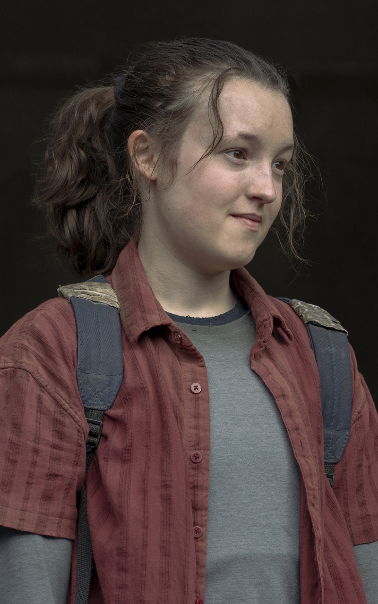
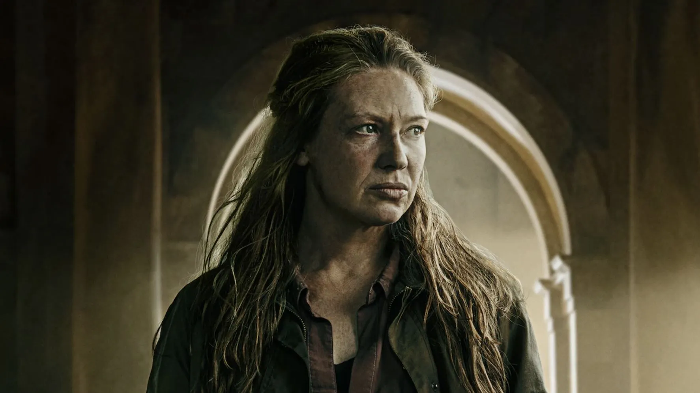

Joel es un contrabandista endurecido por la vida en un mundo postapocalíptico, marcado por la pérdida y el sufrimiento. Desde el inicio de la serie, se lo presenta como un hombre frío, pragmático y con pocas conexiones emocionales, resultado directo de las tragedias que vivió desde el colapso de la civilización. Sin embargo, su personaje evoluciona de manera significativa a lo largo de la historia, especialmente a través de su vínculo con Ellie. Lo que comienza como una misión de transporte se convierte poco a poco en una relación de profundo afecto, casi paternal. Joel va dejando atrás su coraza emocional, redescubriendo su capacidad de amar y de proteger, incluso a costa de tomar decisiones moralmente cuestionables. Esta transformación lo convierte en uno de los personajes más complejos y humanos de la serie.
Ellie Williams - Interpretada por Bella Ramsey

Bella Ramsey como Ellie.
Ellie es una adolescente valiente, sarcástica e increíblemente resiliente, que creció en un mundo devastado por la infección. A pesar de su edad, demuestra una madurez sorprendente y una capacidad de adaptación única frente a la violencia y el caos que la rodean. Lo que la hace especial no es solo su personalidad fuerte y su sentido del humor irónico, sino también el hecho de ser inmune al hongo que ha destruido a la humanidad. Esta condición la convierte en la esperanza de la humanidad, pero también en un blanco constante de peligro. A lo largo de la serie, Ellie evoluciona emocionalmente mientras enfrenta pérdidas, toma decisiones difíciles y desarrolla un lazo profundo con Joel, quien pasa de ser un simple protector a convertirse en una figura paterna. Su crecimiento personal y emocional es tan poderoso como su lucha por sobrevivir, y termina siendo uno de los motores narrativos más fuertes de la historia.
Personajes Secundarios
Tess - Interpretada por Anna Torv

Tess es la compañera de Joel en los primeros episodios. Fuerte, decidida y valiente, es una figura clave en los comienzos de la historia.
Tommy Miller - Interpretado por Gabriel Luna
Tommy es el hermano de Joel, un exsoldado con ideales más humanitarios. Su aparición representa otra forma de sobrevivir en este mundo hostil.
Bill y Frank - Interpretados por Nick Offerman y Murray Bartlett
Bill y Frank protagonizan uno de los episodios más emotivos de la serie. Su historia de amor en medio del caos fue aclamada por la crítica.